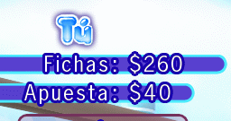
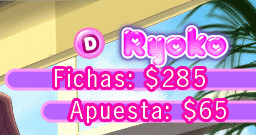
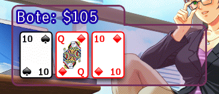
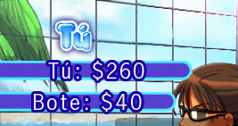

15 |
Interfaz del juego |
 |
El cursor: El cursor de la mano indica dónde puedes seleccionar iconos. El área de información: En póquer Texas Hold’em:  En la esquina superior izquierda de la pantalla puedes ver tus fichas y tu apuesta. El bote para esta mano se muestra en la caja translúcida.  En la esquina superior derecha puedes ver las fichas de tu rival y su apuesta. El icono de la marca identifica quién se encuentra en la posición del repartidor para esta mano.  El flop, el turn, el river y el bote se muestran en la caja translúcida. También puedes mover el cursor sobre la caja y pulsar y mantener pulsado  para moverla al punto que quieras de la pantalla. para moverla al punto que quieras de la pantalla.En Blackjack:  En la esquina superior izquierda de la pantalla puedes ver tus fichas y el bote de esta mano. En la esquina superior derecha de la pantalla puedes ver el objetivo que debes alcanzar si quieres que la chica se quite una prenda. Bajo la cantidad del objetivo hay una barra que te muestra lo cerca que estás de conseguir que la chica se quite otra prenda de ropa. |
 |
 |
 |